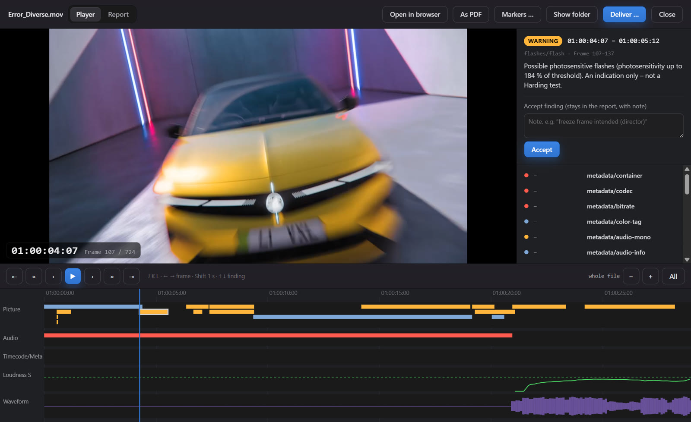
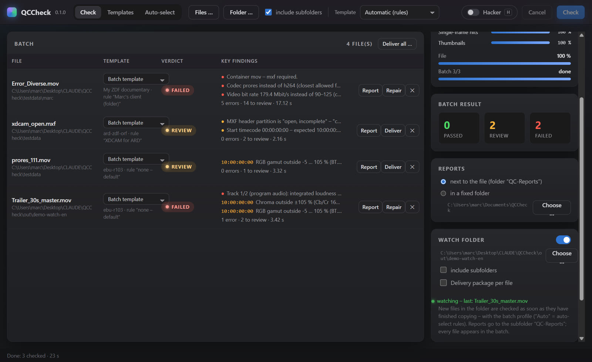

QC before delivery – in one windowQC vor der Abgabe – in einem Fenster
QCCheck checks transmission masters against the delivery specs of ARD, ZDF, ORF and SRF (TPR 2025, EBU R 103 / R 128): container, codec, start timecode, levels and gamut, loudness and True Peak, interlace, black and freeze frames, flashes, pixel faults. Every finding has a timecode, a frame and its source in the spec.QCCheck prüft Sendemaster gegen die Pflichtenhefte von ARD, ZDF, ORF und SRF (TPR 2025, EBU R 103 / R 128): Container, Codec, Start-Timecode, Pegel und Gamut, Lautheit und True Peak, Halbbilder, Schwarz- und Standbilder, Blitze, Pixelfehler. Jeder Befund hat Timecode, Bild und seine Quelle im Pflichtenheft.

InstallInstallieren
One line installs the app and the command line qccheck – no administrator rights. The package comes from GitHub and is only unpacked if its Ed25519 signature is valid.Eine Zeile installiert die App und die Kommandozeile qccheck – ohne Administratorrechte. Das Paket kommt von GitHub und wird nur entpackt, wenn seine Ed25519-Signatur stimmt.
- Open PowerShell: Start menu, type “PowerShell”, press Enter.PowerShell öffnen: Startmenü, „PowerShell“ tippen, Enter.
- Paste the line and press Enter. It takes about a minute.Zeile einfügen und Enter drücken. Das dauert etwa eine Minute.
- Start QCCheck from the desktop or the Start menu.QCCheck über Desktop oder Startmenü starten.
irm https://marcvannuffel.github.io/qccheck-site/install.ps1 | iex- Open Terminal: press ⌘ Space, type “Terminal”, press Return.Terminal öffnen: ⌘ Leertaste, „Terminal“ tippen, Return.
- Paste the line and press Return. It takes about a minute.Zeile einfügen und Return drücken. Das dauert etwa eine Minute.
- Start QCCheck from Applications in your home folder, or with Spotlight.QCCheck aus „Programme“ im Benutzerordner starten oder über Spotlight.
curl -fsSL https://marcvannuffel.github.io/qccheck-site/install.sh | bashApple Silicon and Intel – one package for both.Apple Silicon und Intel – ein Paket für beide.
Updates arrive by themselves: the app shows them at the top right and installs them after checking the signature again.Updates kommen von selbst: Die App zeigt sie oben rechts und installiert sie, nachdem sie die Signatur wieder geprüft hat.
Beta channel and uninstallingBeta-Kanal und Deinstallieren
Beta (pre-releases, may be unfinished):Beta (Vorabversionen, können unfertig sein):
irm https://marcvannuffel.github.io/qccheck-site/beta/install.ps1 | iexcurl -fsSL https://marcvannuffel.github.io/qccheck-site/beta/install.sh | bashThe normal line switches back to the stable channel. To uninstall, delete the QCCheck shortcuts and the folder %LOCALAPPDATA%\QCCheck (Mac: ~/Library/Application Support/QCCheck and ~/Applications/QCCheck.app).Die normale Zeile stellt zurück auf stabil. Entfernen: Verknüpfungen QCCheck löschen und den Ordner %LOCALAPPDATA%\QCCheck (Mac: ~/Library/Application Support/QCCheck und ~/Applications/QCCheck.app).
What's new in 0.1.0Neu in 0.1.0
- Player with frame-accurate timeline – findings as markers per track, loudness and waveform below, J/K/L, frame stepping, source timecode with drop-frame.Player mit bildgenauer Zeitleiste – Befunde als Marken je Spur, Lautheit und Wellenform darunter, J/K/L, Einzelbilder, Quell-Timecode mit Drop-Frame.
- Accept findings with a note – they stay in the report and the delivery package.Befunde akzeptieren mit Notiz – sie bleiben in Bericht und Lieferpaket.
- Templates and auto-select rules – your own house standards on top of the broadcaster specs, chosen per file.Prüfvorlagen und Auto-Auswahl – eigene Hausstandards auf den Pflichtenheften, je Datei gewählt.
- Delivery package – report (PDF), JSON, client view (H.264), markers for Resolve, Premiere and Final Cut, checksums.Lieferpaket – Bericht (PDF), JSON, Kundenansicht (H.264), Marker für Resolve, Premiere und Final Cut, Prüfsummen.
- Repair – loudness, start timecode, line-up, levels, rewrap into a new file; the original stays untouched.Reparieren – Lautheit, Start-Timecode, Vor-/Nachlauf, Pegel, neu verpacken in eine neue Datei; das Original bleibt.
- Watch folder, timecode continuity, Dolby E, bars & tone, English and German.Überwachungsordner, Timecode-Kontinuität, Dolby E, Farbbalken und Messton, Englisch und Deutsch.

RequirementsVoraussetzungen
- Windows 10 or 11 (64-bit), or macOS 11 or later on Apple Silicon or IntelWindows 10 oder 11 (64 bit) oder macOS 11 oder neuer auf Apple Silicon oder Intel
- About 500 MB disk space; more cores check faster (UHD ProRes: roughly half real time on 20 cores)Etwa 500 MB Platz; mehr Kerne prüfen schneller (UHD-ProRes: etwa halbe Echtzeit auf 20 Kernen)
- Internet only for installing and updates – files are checked locally and never uploadedInternet nur für Installation und Updates – geprüft wird lokal, nichts wird hochgeladen
- Nothing else: QCCheck brings its own ffmpeg (LGPL, source offer in the package)Sonst nichts: QCCheck bringt sein eigenes ffmpeg mit (LGPL, Quellangebot im Paket)
QCCheck is a technical pre-check. It does not replace the broadcaster's acceptance, and the flash check is not a Harding test.QCCheck ist eine technische Vorprüfung. Sie ersetzt nicht die Abnahme des Senders, und die Blitz-Prüfung ist kein Harding-Test.